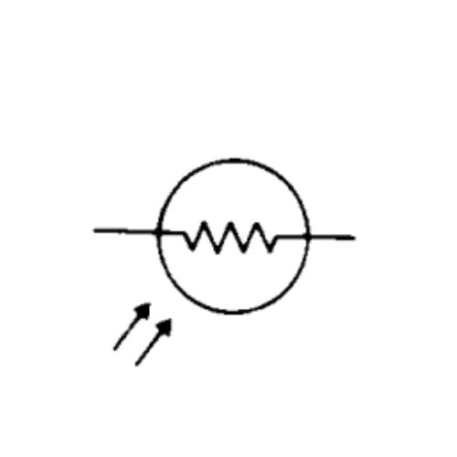
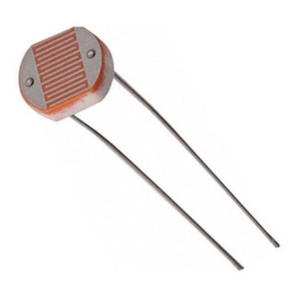
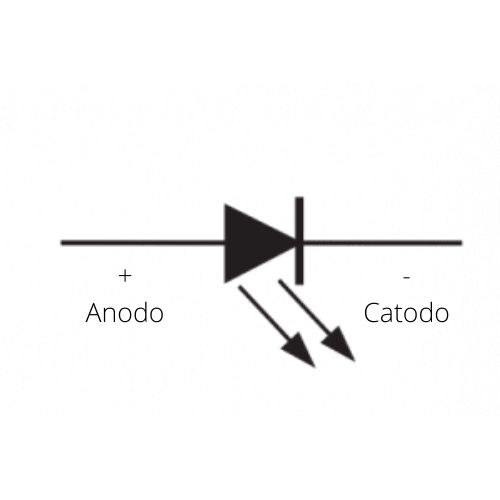
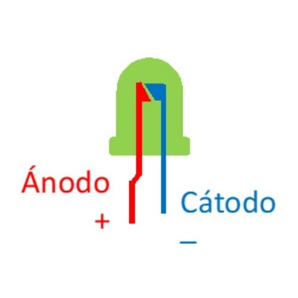
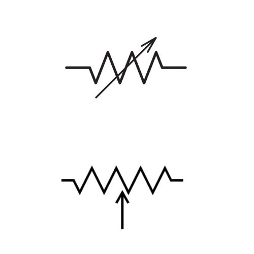
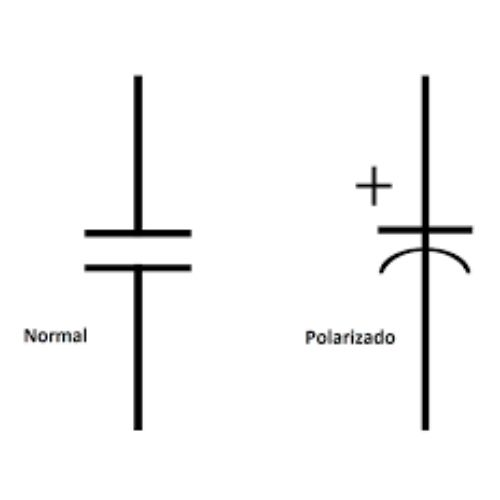
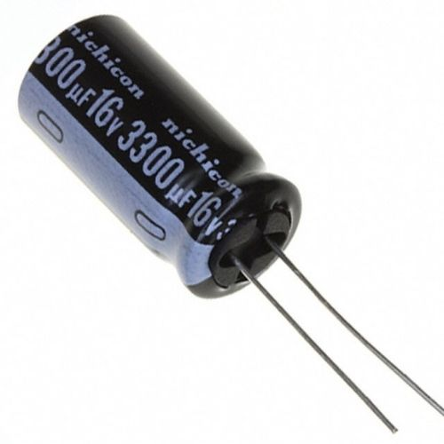
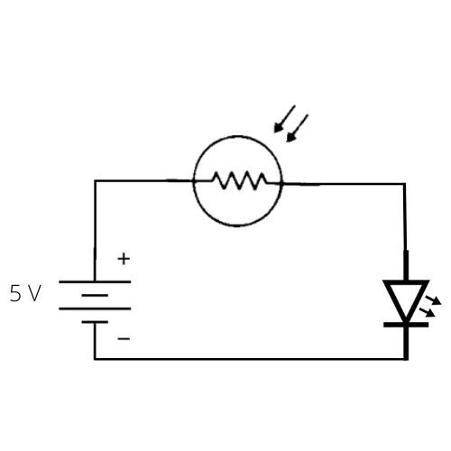
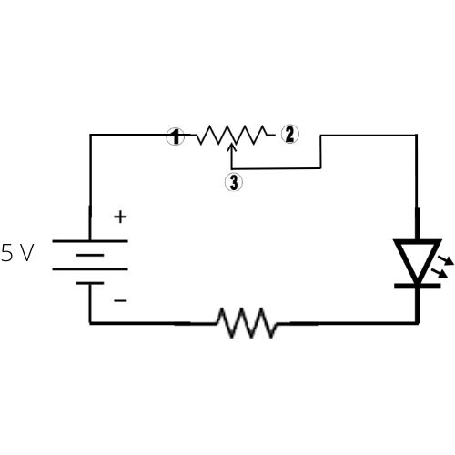
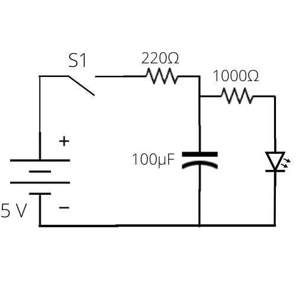

QUE SON LOS ELEMENTOS PASIVOS
son aquellos que no tienen la capacidad de controlar la corriente
por medio de otra señal eléctrica. Es decir no pueden generar
energia. Ejemplos de componentes electrónicos pasivos son
condensadores, resistores, capacitores e inductores.
LA FOTOCELDA
La fotocelda está compuesta por dos elementos principales, una fotorresistencia o LDR que mencionamos líneas más arriba y también por un circuito que permite que corte o bloquee el paso de la corriente.Simbolo
Aspecto Fisico
LOS LEDS
es una fuente de luz constituida por un material semiconductor dotado de dos terminales. Se trata de un diodo de unión p-n, que emite luz cuando está activado.Simbolo
Aspecto Fisico
EL POTENCIOMETRO
El usuario al manipularlo, obtiene entre el terminal central y uno de los extremos una fracción de la diferencia de potencial total, se comporta como un divisor de tensión o voltaje.Simbolo
Aspecto Fisico

LOS CONDENSADORES
Un condensador eléctrico o capacitor es un dispositivo pasivo, utilizado en electricidad y electrónica, capaz de almacenar energía sustentando un campo eléctrico.Simbolo
Aspecto Fisico
EJERCICIOS
Ejercicio Uno
Realiza el circuito en el protoboard, cuando el led encienda tapa la parte superior de la fotocelda y apunta tus observaciones.
Ejercicio Dos
En el protoboard implementa el circuito, luego gira el control y apunta tus observaciones.
Ejercicio Tres
En el protoboard realiza el circuito, enciende el led y espera 30 segundos, luego desconecta la bateria, apunta tus observaciones.